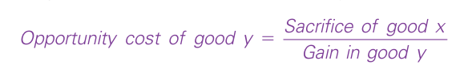
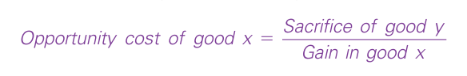

1.1The Economy and Economic Systems
Every day, billions of people around the world make decisions. They make decisions about providing for the fundamentals in life such as food, clothing and shelter and how they use non-work time for leisure and domestic tasks. Making these decisions involves interaction with other people, with governments and business organizations. At any time, individuals could be mothers, fathers, sons, daughters, carers, employers, employees, houseworkers, producers, consumers, savers, taxpayers or benefit recipients. Many, but not all, of these interactions are related to some sort of exchange, normally with the use of a medium of exchange such as money, and sometimes to a direct exchange of services. Individuals purchase goods and services for final consumption and provide the inputs into production – land, labour and capital. We refer to these individuals collectively as ‘households’. The organizations which buy these factors and use them to produce goods and services are referred to collectively as ‘firms’.
The amount of interaction between households and firms – the amount of buying and selling which takes place – represents the level of economic activity. The more buying and selling there are, the higher the level of economic activity. Households and firms engaging in production and exchange in a particular geographic region are together referred to as the economy.
Economics studies the interactions between households and firms in relation to exchange and the many decisions which are made in so doing. It also covers situations where some output is produced without the receipt of an income, such as the work done by unpaid carers and homemakers. It explores how people make a living; how resources are allocated among the many different uses they could be put to; and the way in which our activities influence not only our own well-being but also that of others and the environment.
1.1.1The Economic Problem
There are three questions that any economy must face:
- What goods and services should be produced?
- How should these goods and services be produced?
- Who should get the goods and services that have been produced?
To satisfy these questions, economies have resources at their disposal which are classified as land, labour and capital.
- Land – all the natural resources of the earth. This includes mineral deposits such as iron ore, coal, gold and copper; oil and gas; fish in the sea; and all the food and raw materials produced from the land.
- Labour – the human effort, both mental and physical, that goes into production. A worker in a factory producing precision tools, an investment banker, an unpaid carer, a road sweeper, a teacher – these are all forms of labour.
- Capital – the equipment and structures used to produce goods and services. Capital goods include machinery in factories, buildings, tractors, computers, cooking ovens – anything where the good is not used for its own sake but for the contribution it makes to production.
1.1.2Scarcity and Choice
It is often assumed that these resources are ultimately scarce in relation to the demand for them. As members of households, we invariably do not have the ability to meet all our wants and needs. Our needs are the necessities of life which enable us to survive – food and water, clothing, shelter and proper health care – and our wants are the things which we believe make for a more comfortable and enjoyable life – holidays, different styles of clothes, smartphones, leisure activities, the furniture and items we have in our houses, and so on. Our demand for these wants and needs is generally greater than our ability to satisfy them. Scarcity means that society has limited resources and therefore cannot produce all the goods and services households demand. Just as a household cannot give every member everything they want, a society cannot give every individual the highest standard of living to which they might aspire. Because of the tension between our wants and needs and scarcity, decisions must be made by households and firms about how to allocate our incomes and resources to meet our wants and needs.
Economics investigates the issues arising due to the decisions that households and firms make as a result of this tension. A typical textbook definition of economics is ‘the study of how society makes choices in managing its scarce resources and the consequences of this decision-making’. This definition can, however, mask the complexity and extent of the reach of economics. We might characterize households as having unlimited wants, but not everyone in society is materialistic, which the idea of unlimited wants might imply. Some people are more content with the simple things in life and their choices are based on what they see as being important. These choices are no less valid but reflect the complexity of the subject. Some people choose to maintain their standard of living through crime. A decision to resort to crime has reasons and consequences, and these may be of as much interest to an economist as the reasons why firms choose to advertise their products or why central banks make decisions on monetary policy.
Some might point out that the very idea of scarcity should be questioned in some instances. In Greece, Spain and some other European countries, there are millions of people who want to work but who cannot find a job. It could be argued that labour is not scarce in this situation, but job vacancies certainly are. Economists will be interested in how such a situation arises and what might be done to alleviate the issues that arise as a result of high levels of unemployment.
The study of economics, therefore, has many facets but there are some central ideas which help define the field even though economics draws on related disciplines such as psychology, sociology, law, anthropology, geography, statistics and maths, among others. These central ideas provide themes around which this book is based, and which form the basis of many first-year undergraduate degree courses.
1.2How People Make Decisions
The behaviour of an economy reflects the behaviour of the individuals who make up the economy. We will now outline some of the core issues which economics explores in relation to individuals making decisions.
1.2.1People Face Trade-offs
Households and firms must make choices. Making choices involves trade-offs. A trade-off is the loss of the benefits from a decision to forego or sacrifice one option, balanced against the benefits incurred from the choice made. When choosing between alternatives we must consider the benefits gained from choosing one course of action but recognize that we must forego the benefits that could arise from the alternatives. To get one thing we like, we usually must give up another thing that we might also like. Making decisions, therefore, requires trading off the benefits of one action against those of another.
To illustrate this important concept, we provide some examples below.
Example 1 Consider an economics undergraduate student who must decide how to allocate their time. They can spend all of their time studying, which will bring benefits such as a better class of degree; they can spend all their time enjoying leisure activities, which yield different benefits; or they can divide their time between the two. For every hour they study, they give up the benefits of an hour they could have devoted to spending time in the gym, riding a bicycle, watching TV, sleeping or working at a part-time job for some extra spending money. The student must trade-off the benefits from studying against the benefits of using their time in other ways.
Example 2 A firm might be faced with the decision on whether to invest in a new product or a new accounting system. Both bring benefits – the new product might result in improved revenues and profits in the future, and the accounting system may make it more effective in controlling its costs, thus helping its profits. If scarce investment funds are put into the accounting system, the firm must trade-off the benefits that the new product investment would have brought.
Example 3 When people are grouped into societies, they face different kinds of trade-offs which can highlight the interaction of individuals and firms within society in general. An example is the trade-off between a clean environment and a high level of income. Laws that require firms to reduce pollution raise the cost of producing goods and services. Because of the higher costs, firms can end up earning smaller profits, paying lower wages, charging higher prices, or some combination of these three. Thus, while pollution regulations give us the benefit of a cleaner environment and the improved levels of health that come with it, they can have the cost of reducing the incomes of the firms’ owners, workers and customers.
Efficiency and Equity An important trade-off that has interested economists for many years is the trade-off between efficiency and equity. In economics, efficiency deals with ways in which society gets the most it can (depending how this is defined) from its scarce resources. An outcome can be identified as being efficient by some measure, but not necessarily desirable. Equity looks at the extent to which the benefits of outcomes are distributed fairly among society’s members. Often, when government policies are being designed, these two goals conflict. Because equity is about ‘fairness’ it inevitably involves value judgements. Differences in opinion lead to disagreements among policymakers and economists.
There are some economists who dismiss the idea of a trade-off between equity and efficiency as a myth in some contexts, because the idea has been generalized to all situations. The historical context and origins of many economic ideas are important to understand. The origins of the equity and efficiency trade-off came from Arthur Okun in the 1970s. There are some economists who argue that improving equality can lead to improvements in efficiency – in effect that it is possible to have a bigger cake and to eat it.
Policies aimed at achieving a more equal distribution of economic well-being, such as the social security system, involve a trade-off between the effects of a benefits system versus the effects on the efficiency of the tax system that pays for it. A government decision to raise the top rate of income tax on what it considers ‘the very rich’ but to abolish income tax for those earning the minimum wage is effectively a redistribution of income from the rich to the poor. It provides incentive effects for some in society to seek work, but may reduce the reward for working hard, so some in society choose to work less or even move to another country where the tax system is less onerous. Whether the trade-off is a ‘good’ thing is dependent on the philosophy, belief sets and opinions of the decision-makers, and the power which they have in society. Recognizing that people face trade-offs does not by itself tell us what decisions they will or should make. Acknowledging and understanding the consequences of trade-offs is important, because people are likely to make more informed decisions if they understand the options they have available.
You will often hear the adage ‘there is no such thing as a free lunch’. Does this simply refer to the fact that someone must have paid for the lunch to be provided and served? Or does the recipient of the ‘free lunch’ also incur a cost?
1.2.2Opportunity Cost
Because people face trade-offs, making decisions requires comparing the costs and benefits of alternative courses of action. In many cases, however, the costs of an action are not as obvious as might first appear.
Consider, for example, the decision whether to go to university. The benefits are intellectual enrichment and a lifetime of better job opportunities. In considering the costs, you might be tempted to add up the money you spend on tuition fees, resources and living expenses over the period of the degree. This approach is intuitive and might be a way in which non-economists would approach the decision. An economist would point out that even if you decided to leave full-time education, you would still incur living expenses and so these costs would be incurred in any event. Accommodation becomes a cost of higher education only if it is more expensive at university than elsewhere.
This calculation of costs ignores the largest cost of a university education – your time. For most students, the wages given up attending university are the largest single cost of their higher education. When making decisions it is sometimes more helpful to measure the cost in terms of what other options have had to be sacrificed rather than in money terms. Opportunity cost is the measure of the options sacrificed in making a decision. The opportunity cost of going to university is the wages from full-time work that you have had to sacrifice.
Calculating Opportunity Costs Opportunity cost is the cost expressed in terms of the next best alternative sacrificed – what must be given up in order to acquire something. As a general principle, we can express the opportunity cost as a ratio expressed as the sacrifice in one good in terms of the gain in the other:
Opportunity cost of good y = Sacrifice of good x / Gain in good y

Expressing the opportunity cost in terms of good x would give:
Opportunity cost of good x = Sacrifice of good y / Gain in good x

Opportunity cost can be expressed in terms of either good – they are the reciprocal of each other.
1.2.3Thinking at the Margin
Decisions in life are rarely straightforward and usually involve weighing up costs and benefits. Having a framework or principle on which to base decision-making can help if we want to maximize benefits or minimize costs. Thinking at the margin is one such framework that economists adopt in thinking about decision-making. Marginal changes describe small incremental adjustments to an existing plan of action. Marginal analysis is based around an assumption that economic agents (an individual, firm or organization that has an impact in some way on an economy) are seeking to maximize or minimize outcomes when making decisions. Consumers may be assumed to seek to maximize the satisfaction they gain from their incomes, and firms to maximize profits and minimize costs. Maximizing and minimizing behaviour is based on a further assumption that economic agents behave rationally.
It is important to stop and consider what we mean by the term ‘rational’ in this context. When some economists use the term ‘rational’ in the context of decision-making, it simply means the assumption that decision-makers can make consistent choices between alternatives. We will look at this in more detail later in the book, but at this stage we will express rationality based on decision-makers’ ability to rank their preferences and do the best they can with their existing resources. Thinking at the margin means that decision-makers choose a course of action such that the marginal cost is equal to the marginal benefit. If a decision results in greater marginal benefits than marginal costs, it is worth making that decision and continuing up to the point where the marginal cost of the decision is equal to the marginal benefit.
The assumption of rational behaviour provides a framework around which decisions can be analyzed and has been a basic tenet of economics since the 1870s, with thinkers such as William Stanley Jevons and Carl Menger building on work by David Ricardo and Jeremy Bentham, which became part of the so-called marginalist school. The assumptions of rational economic behaviour have implications which have been subject to criticism. In studying economic models which rely on the assumption of rational behaviour, it is important to remember that if these assumptions are relaxed, outcomes might be very different. We will cover a number of economic models which are based on this assumption, because it provides a view into the way in which economic analysis has developed historically and how it is subject to evolution and change. It also provides a way of thinking about issues which can be contrasted with other ways of thinking when different assumptions are held.
1.2.4People Respond to Incentives
If we assume the principle of rational behaviour and that people make decisions by comparing costs and benefits, it is logical to assume that their behaviour may change when the costs or benefits change. That is, people respond to incentives. The threat of a fine and the removal of a driving licence is designed to regulate the way in which people drive and park their cars; putting a price on the provision of plastic bags in supermarkets aims to encourage people to re-use bags and reduce the total number used.
There has been an increase in the amount of research conducted on incentives because the intentions of policymakers do not always lead to the outcomes expected or desired. A fine imposed on parents who are late picking up their children from day care centres might be expected to reduce the number of late pickups, but one study in Israel showed that far from reducing the number of late pickups, parents were willing to pay the fine and the number arriving late actually increased. Such consequences are referred to as ‘unintended consequences’.
What sort of incentives might governments put in place to encourage workers to find work and get off welfare benefits? What might be the unintended consequences of the incentives you identify?
1.3How People Interact
Decision-making not only affects ourselves but other economic agents as well. We will now explore some issues which arise when economic agents interact with others.
1.3.1Trade Can Make Everyone Better Off
The United States and China are competitors with Europe in the world economy because US and Chinese firms produce many of the same goods as European firms. It might be thought that if China increases its share of world trade at the expense of Europe this might be bad news for people in Europe. This might not be the case.
Trade between Europe and the United States and China is not like a sports contest, where one side wins and the other side loses (a zero-sum game). In some circumstances trade between economies can make all better off. Households, firms and countries have different resource endowments; individuals have talents and skills that allow them to produce some things more efficiently than others; some firms have experience and expertise in the production of goods and services; and some countries, like Spain, are blessed by plenty of sunshine which allows their farmers to grow high quality soft fruit. Trade allows individuals, firms and countries to specialize in the activities they do best. With the income they receive from specializing they can trade with others who are also specializing and can improve their standard of living as a result.
However, while trade can provide benefits and winners, there are also likely to be costs and losers. The economic development of some countries in the last 50 years has meant that many people have access to cheap, good quality goods and services as a result of the export of these goods and services. For workers and employers in these industries in developed economies, the competition from developing countries might mean that they find themselves without work or must close their businesses. In some situations, it is difficult for these people to find alternative work, and whole communities can be greatly affected by the changes being experienced. They may not agree that ‘trade can benefit everyone’.
1.3.2The Capitalist Economic System
The economic problem highlights three questions that any society must answer. What goods and services should be produced, how they are to be produced and who will get what is produced are determined by the economic system. An economic system is the way in which resources are organized and allocated to provide for the needs of an economy’s citizens. In many countries of the world, a capitalist economic system based on markets is the primary way in which the three questions are addressed. A capitalist economic system incorporates the principles of the private ownership of factors of production to produce goods and services which are exchanged through a price mechanism. Production is operated primarily for profit.
Capitalist economic systems have proved capable of raising the standard of living of millions of people over the last 200 years. We can measure the standard of living in terms of the income that people earn which allows them to purchase the goods and services they need to survive and enjoy life. While capitalist systems have increased living standards for many, it is not the case that everyone in society benefits equally. Capitalism has meant that some people and countries have become very rich whereas others remain poor. The existence of the profit motive provides an incentive for entrepreneurs to take risks to organize factors of production. This dynamism in capitalist systems not only leads to developments in technology and capital efficiency which help generate profits for the individuals and firms concerned but also increases knowledge and information in society as a whole, which further contributes to economic development.
Critics of capitalist systems argue that they are inherently unstable and lurch from boom to bust. In addition, capitalist systems favour those who have acquired ownership of factor inputs. Ownership of factor inputs can result in the exploitation of workers. Owners of factors of production can wield considerable economic and political power which can distort resource allocation. Karl Marx spent a large part of his life seeking to understand and analyze the capitalist system and develop theories to explain why it exploited workers and was unstable.
1.3.3Markets Can Be a Good Way to Organize Economic Activity
The role of markets in capitalist economic systems is central. In a market economy, the three key questions of the economic problem are addressed through the decentralized decisions of many firms and households as they interact in markets for goods and services. Firms decide whom to hire and what to make. Households decide which firms to work for and what to buy with their incomes. These firms and households interact in the marketplace, where prices and, it is assumed, self-interest guide their decisions.
In a pure market economy (one without any government intervention) no one is considering the economic well-being of society as a whole. Free markets contain many buyers and sellers of numerous goods and services, and all of them are interested, primarily, in their own well-being. Yet, despite decentralized decision-making and self-interested decision-makers, market economies have proven remarkably successful in organizing economic activity in a way that can promote overall economic well-being for millions of people, even though it is recognized there are inequalities that will arise.
Planned Economic Systems The inequitable distribution of wealth in capitalist societies which was witnessed in the countries which benefitted from the Industrial Revolution in the 1700s and 1800s led to the development of other economic systems, most notably planned economic systems, sometimes referred to as communist systems or command economies. Communist countries worked on the premise that central planners could guide economic activity and answer the three key questions of the economic problem. The theory behind central planning was that the government could organize economic activity in a way that promoted economic well-being for the country as a whole and led to a more equitable outcome.
Today, most countries that once had centrally planned economies such as Russia, Poland, Angola, Mozambique and the Democratic Republic of Congo have abandoned this system and are developing more market-based economies.
Adam Smith and the Invisible Hand
Adam Smith published An Inquiry into the Nature and Causes of the Wealth of Nations in 1776 and it is a landmark in economics. Smith’s work reflected a point of view that was typical of so-called enlightenment writers at the end of the eighteenth century – that individuals are usually best left to their own devices, without government guiding their actions. This political philosophy provides the intellectual basis for the market economy.
Here is Adam Smith’s description of how people interact in a market economy:
Man (sic) has almost constant occasion for the help of his brethren, and it is vain for him to expect it from their benevolence only. He will be more likely to prevail if he can interest their self-love in his favour, and show them that it is for their own advantage to do for him what he requires of them … It is not from the benevolence of the butcher, the brewer, or the baker that we expect our dinner, but from their regard to their own interest…
Every individual … neither intends to promote the public interest, nor knows how much he is promoting it … He intends only his own gain, and he is in this, as in many other cases, led by an invisible hand to promote an end which was no part of his intention. Nor is it always the worse for the society that it was no part of it. By pursuing his own interest, he frequently promotes that of the society more effectually than when he really intends to promote it.
Smith suggested that participants in the economy are motivated by self-interest and that the ‘invisible hand’ of the marketplace guides this self-interest into promoting general economic well-being. Smith’s use of the term ‘self-interest’ should not be interpreted as ‘selfishness’. Smith was interested in how humans pursue their own self-interest in their own way. As the 2002 Nobel Prize in Economics winner, Vernon L. Smith, put it in his Prize Lecture, ‘doing good for others does not require deliberate action to further the perceived interest of others’.
The term ‘invisible hand’ is widely used in economics to describe the way market economies allocate scarce resources but interestingly, Adam Smith only used the phrase once in The Wealth of Nations. The phrase was also used in an earlier book, The Theory of Moral Sentiments. In both instances, Smith outlined the idea that self-interested individuals’ actions could produce socially desirable results.
In the Theory of Moral Sentiments, the phrase is used to show how human desire for luxury can have the effect of providing employment for others, and in The Wealth of Nations the phrase is used in relation to investment choices. There are similarities in sentiment in both uses, but in the former case, Smith, it seems, was seeking to explore the political philosophy of the economic system he was writing about; a system which was very different in many respects to that which we witness today.
1.3.4Governments Can Sometimes Improve Market Outcomes
An economy can allocate some goods and services through the price mechanism, but markets do not always lead to efficient or equitable outcomes. In some cases, goods and services would not be provided by a market system because it is not practicable to do so, and in other cases market-based allocations might be deemed undesirable, with either too few or too many goods and services consumed. The capitalist system and markets rely on laws and regulations to ensure that property rights are enforced.
Governments provide goods and services which might not be provided in sufficient quantities in a market system and set the legal and regulatory framework within which firms and households can operate. Government intervention in markets may aim to promote efficiency and equity. That is, most policies aim either to enlarge the economic cake, or change the way in which the cake is divided, or even try to achieve both. Market systems do not always ensure that everyone has sufficient food, decent clothing and adequate health care. Many public policies, such as income tax and the social security system, are designed to achieve a more equitable distribution of economic well-being.
When markets do allocate resources, the resulting outcomes might still be deemed inefficient. Economists use the term ‘market failure’ to refer to a situation in which the market on its own fails to produce an efficient allocation of resources. One possible cause of market failure is an externality, which is the uncompensated impact, both negative and positive, of one person’s actions on the well-being of a bystander (a third party). For instance, the classic example of a negative externality is pollution. Another possible cause of market failure is market power, which refers to the ability of a single person or business (or group of businesses) to unduly influence market prices or output. In the presence of market failure, well-designed public policy can enhance economic efficiency.
To say that the government can improve on market outcomes at times does not mean that it always will. Public policy is made by a political process that is also imperfect. Sometimes policies are designed simply to reward the politically powerful. Sometimes they are made by well-intentioned leaders who are not fully informed. One goal of the study of economics is to help you judge when a government policy is justifiable to promote efficiency or equity, and when it is not.
1.4How the Economy as a Whole Works
We started by discussing how individuals make decisions and then looked at how people interact with one another. We will now look at issues arising that concern the workings of the economy as a whole.
1.4.1Microeconomics and Macroeconomics
Since roughly the 1930s, the field of economics has been divided into two broad subfields. Microeconomics is the study of how households and firms make decisions and how they interact in specific markets. Macroeconomics is the study of economy-wide phenomena. The Nobel Prize winning economist Ragnar Frisch is credited with being the first to use the two terms (along with the term ‘econometrics’ incidentally), and the Cambridge economist Joan Robinson, an associate of Keynes, was one of the first to define macroeconomics, referring to it as ‘the theory of output as a whole’.
Microeconomics might involve the study of the effects of a congestion tax on the use of cars in a city centre, the impact of foreign competition on the European car industry, or the effects of attending university on a person’s lifetime earnings. A macroeconomist might study the effects of borrowing by national governments, the changes over time in an economy’s rate of unemployment or alternative policies to raise growth in national living standards.
Microeconomics and macroeconomics are closely intertwined. Because changes in the overall economy arise from the decisions of millions of individuals, it is impossible to understand macroeconomic developments without considering the associated microeconomic decisions. For example, a macroeconomist might study the effect of a cut in income tax on the overall production of goods and services in an economy. To analyze this issue, they must consider how the tax cut affects the decisions of households concerning how much to spend on goods and services.
Despite the inherent link between microeconomics and macroeconomics, the two fields are distinct. Because microeconomics and macroeconomics address different questions, they sometimes take quite different approaches and are often taught in separate courses.
1.4.2An Economy’s Standard of Living Is Related to Its Ability to Produce Goods and Services
A key concept in macroeconomics is economic growth – the increase in the number of goods and services produced in an economy over a period of time, usually expressed over a quarter and annually. One measure of the economic well-being of a nation is given by gross domestic product (GDP) per capita (per head) of the population, which can be seen as being the average income per head of the population. If you look at GDP per capita figures, it becomes clear that many advanced economies have a relatively high income per capita, whereas in countries in sub-Saharan Africa, average incomes are much lower and, in some cases, significantly lower. For example, in 2017, the GDP per capita of Benin in West Africa was reported by the World Bank as being $860. In comparison, the GDP per capita of Germany was $44,470. Put another way, average incomes in Benin are around 1.93 per cent of those in Germany.
Not surprisingly, this large variation in average income is reflected in various other measures of the quality of life and standard of living. Citizens of high-income countries typically have better nutrition, better health care and longer life expectancy than citizens of low-income countries, as well as more TV sets, more gadgets and more cars.
Changes in the standard of living over time are also large. Between 2010 and 2016, economic growth, measured as the percentage growth rate of GDP, in Bangladesh averaged around 6.3 per cent per year and in China about 8.0 per cent a year, but in Brazil the economy only grew by around 1.35 per cent over the same time period, and in the period 2014–16, the economy of Brazil actually shrank in size by around 3 per cent (source: World Bank).
Variation in living standards is attributable to differences in countries’ productivity – that is, the amount of goods and services produced by a worker (or other factor of production) per time period. In nations where workers can produce a large quantity of goods and services per unit of time, many people enjoy a high standard of living; in nations where workers are less productive, people endure a more meagre existence. Similarly, the growth rate of a nation’s productivity determines the growth rate of its average income.
The relationship between productivity and living standards also has profound implications for public policy. When thinking about how any policy will affect living standards, the key question is how it will affect our ability to produce goods and services. To boost living standards, policymakers need to raise productivity by ensuring that workers are well educated, have the tools and infrastructure needed to produce goods and services, and have access to the best available technology.
The standard of living is not the only measure of well-being. In the UK, for example, the Office for National Statistics (ONS) publishes data on well-being through 41 different measures which attempt to incorporate how people feel about their lives; whether they see what they do as worthwhile; their satisfaction with family life; how satisfied they are with their jobs and their health; where people live and how safe they feel; their involvement in sport, culture and volunteer work; and the extent to which they access the natural environment.
1.4.3Prices Rise When the Government Prints Too Much Money
In Zimbabwe in March 2007 inflation was reported to be running at 2,200 per cent. That meant that a good priced at the equivalent of Z$2.99 in March 2006 would be priced at Z$68.77 just a year later. In February 2008, inflation was estimated at 165,000 per cent. Five months later it was reported as 2,200,000 per cent. In July 2008, the government issued a Z$100 billion note. At that time, it was just about enough to buy a loaf of bread. Estimates for inflation in Zimbabwe in July 2008 put the rate of growth of prices at 231,000,000 per cent. In January 2009, the government issued Z$10, 20, 50 and 100 trillion dollar notes – a trillion is 1 followed by 12 zeros. This episode is one of history’s most spectacular examples of inflation, an increase in the overall level of prices in the economy. It is not the only example of inflation that is out of control, however. Weimar Germany in the early 1920s, the Balkans in the mid-1990s and, more recently, Venezuela in 2018, all experienced hyperinflation. In Venezuela, inflation was reported by Steve Hanke of Johns Hopkins University in the United States as being over 4,000 per cent.
High inflation is a problem because it imposes various costs on society; keeping inflation at a low level is a goal of economic policymakers around the world. In almost all cases of high or persistent inflation, a causal factor is the growth in the quantity of money. When a government creates large quantities of the nation’s money, without any corresponding increase in output or productivity, the value of the money falls. In the period outlined above, the Zimbabwean government was issuing money in ever higher denominations. It is generally accepted that there is a relationship between the growth in the quantity of money and the rate of growth of prices.
What is the difference between microeconomics and macroeconomics? Write down three questions that the study of microeconomics might be concerned with and three questions that might be involved in the study of macroeconomics.
Summary
- Key issues arising in individual decision-making are that people face trade-offs among alternative goals, that the cost of any action is measured in terms of foregone opportunities, that rational people make decisions by comparing marginal costs and marginal benefits, and that people change their behaviour in response to the incentives they face.
- When economic agents interact with each other, the resulting trade can be mutually beneficial.
- In capitalist economic systems, the market mechanism is the primary way in which the questions of what to produce, how much to produce and who should get the resulting output are answered.
- Markets do not always give outcomes that are efficient or equitable. In such circumstances, governments can potentially improve market outcomes.
- The field of economics is divided into two subfields: microeconomics and macroeconomics. Microeconomists study decision-making by households and firms, and the interaction among households and firms in the marketplace. Macroeconomists study the forces and trends that affect the economy as a whole.
- The fundamental lessons about the economy as a whole are that productivity is a key source of living standards and that money growth can be a primary source of inflation.
Incentives
Intuition might tell us that people respond to incentives. Economics deals with human beings, and what might seem to be a common sense statement reveals more complex relationships which make outcomes different from those expected.
Research by Gneezy, Meier and Ray-Biel (2011) highlight some of these complexities. Their research suggested that incentives may work better in certain circumstances than in others. Policymakers need to consider a wide variety of issues when deciding on putting incentives in place.
First, they must consider the type of behaviour to be changed. For example, society might want to encourage what Gneezy et al. call ‘prosocial’ behaviour. This might include donating blood, sperm or organs; increasing the amount of waste put out for recycling; attending school, college or university; working harder in education to improve grades; installing insulation or solar panels in homes to reduce energy waste; or finding ways of encouraging people to stop smoking.
Policymakers then must consider the parties involved. This can be expressed as a principal–agent issue. The principal is a person or group for whom another person or group, the agent, is performing some act. In encouraging people to stop smoking, the smoker is the agent and society is the principal. Next, the type of incentive offered to bring about desired behaviours must be considered – often this will be monetary. Gneezy et al. note that monetary incentives have a direct price effect and a psychological effect. Finally, policymakers must think about how the incentive is framed.
Providing a monetary incentive to bring about a desired change in behaviour might seem an obvious policy choice such as offering a monetary incentive to donate blood or install solar panels. Gneezy et al. point to reasons why the outcome might not be as obvious as first hoped. They suggest that in some cases, offering monetary incentives can ‘crowd out’ the desired behaviour. Offering a monetary incentive can change the perceptions of agents. People have intrinsic motivations – personal reasons for particular behaviours. Others have perceptions about the behaviour of others, for example, someone who donates blood might be seen by others as being ‘nice’. Social norms may also be affected, for example attitudes to smoking or the recycling of waste.
Gneezy et al. suggest that monetizing behaviour changes the psychology, and the psychology effect can be greater than the direct price effect. The price effect would suggest that if you pay someone to donate more blood, you should get more people donating blood. People who donate blood, however, might do so out of a personal conviction – they have intrinsic motivations. By offering monetary incentives, the perception of the donor and others might change so that they are not seen as being ‘nice’ any more but as being ‘mercenary’, and not motivated intrinsically but by extrinsic reward – greed, in other words. If the psychological effect outweighs the direct money effect, the result could be a reduction in the number of donors.
In the case of cutting smoking, the size of the money effect might be a factor. This chapter has raised the idea of rational people thinking at the margin. With smoking, the marginal decision to have one more cigarette imposes costs and benefits on the smoker – the benefit is the pleasure people get from smoking an additional cigarette, and the cost the (estimated) 11 minutes of their life that is cut as a result. The problem is that the marginal cost is not tangible and is likely to be outweighed by the marginal benefit (not to mention the addictive qualities of tobacco products). Over time, however, the total benefit of stopping smoking becomes much greater than the total cost. The incentive offered, therefore, must be such that it takes into account these marginal decisions, and it might be difficult to estimate the size of the incentive needed.
Other issues relating to incentives involve the trust between the principal and agent. If an incentive is provided, for example, this sends a message that the desired behaviour is not taking place. There may be a reason for this. This might be that the desired behaviour is not attractive and/or is difficult to carry out. Incentives also send out a message that the principal does not trust the agent’s intrinsic motivation; for example, that people will not voluntarily give blood or recycle waste effectively. Some incentives may work to achieve the desired behaviour in the short term, but will this lead to the desired behaviour continuing in the long term when the incentive is removed?
Incentives might be affected by the way they are framed – how the wording or the benefits of the incentive are presented to the agent by the principal. Gneezy et al. use a very interesting example of this. Imagine a situation, they say, where you meet a person and develop a relationship. You want to provide that person with the incentive to have sex. The effect of the way the incentive is framed might have a considerable effect on the outcome. If, for example, you framed your ‘offer’ by saying ‘I would like to make love to you and to incentivize you to do so I will offer you €50,’ you might get a very different response to that if you framed it by saying: ‘I would like to make love to you – I have bought you a bunch of red roses’ (the roses just happened to cost €50).
Finally, the cost effectiveness of incentives must be considered. Health authorities spend millions of euros across Europe on drugs to reduce blood pressure and cholesterol. Getting people to take more exercise can also help achieve the same result. What would be more cost effective and a more efficient allocation of resources? Providing incentives (assuming they work) to encourage people to exercise more by, for example, paying for gym membership, or spending that same money on drugs but not dealing with some of the underlying causes?
Reference: Gneezy, U., Meier, S. and Rey-Biel, P. (2011) ‘When and Why Incentives (Don’t) Work to Modify Behaviour’. Journal of Economic Perspectives, 25(4): 191–210.
Critical Thinking Questions
- Why should people need incentives to do ‘good’ things like donating blood or putting out more rubbish for recycling?
- What is meant by the ‘principal–agent’ issue?
- What might be the price and psychological effect if students were given a monetary incentive to attain top grades in their university exams?
- Why might the size of a monetary incentive be an important factor in encouraging desired behaviour, and what side effects might arise if the size of an incentive were increased?
- What is ‘framing’ and why might it be important in the way in which an incentive works? Refer to the need to increase the number of organ donors in your answer to this question.
Questions for Review
- What are the three economic questions which any society must answer?
- Describe the main features of a capitalist economic system and explain why private property and a strong legal system are vital to the success of this system.
- Give three examples of important trade-offs that you face in your life.
- What is the opportunity cost of going to a restaurant for a meal?
- Water is necessary for life. Is the marginal benefit of a glass of water large or small?
- Why should policymakers think about incentives?
- Why can specialization and trade help improve standards of living?
- Explain the two main causes of market failure and give an example of each.
- Why is productivity important?
- What do you think are the main costs of inflation that is out of control on the population?
Problems and Applications
- Describe some of the trade-offs faced by each of the following:
- a. A family deciding whether to buy a new car.
- b. A government deciding whether to build a high-speed rail link between two major cities in the north of the country.
- c. A company chief executive officer deciding whether to recommend the acquisition of a smaller firm.
- d. A university lecturer deciding how much time to devote to preparing for their weekly lecture.
- In 2019, the youth unemployment rate in Spain was 32.6 per cent. Does this mean that labour is not a scarce resource in Spain?
- You are trying to decide whether to take a holiday. Most of the costs of the holiday (airfare, hotel, foregone wages) are measured in euros, but the benefits of the holiday are psychological. How can you compare the benefits to the costs?
- Many of the countries which had planned economic systems have transitioned to a more market-based economic system in the face of numerous problems. What do you think are the disadvantages of planned economic systems? How do market economies solve these problems? Can market systems solve all problems?
- You win €10,000 on the EuroMillions lottery draw. You have a choice between spending the money now or putting it away for a year in a bank account that pays 5 per cent interest. What is the opportunity cost of spending the €10,000 now?
- Three managers of the van Heerven Coach Company are discussing a possible increase in production. Each suggests a way to make this decision.
- FIRST MANAGER: We need to decide how many additional coaches to produce. Personally, I think we should examine whether our company’s productivity – number of coaches produced per worker per hour – would rise or fall if we increased output.
- SECOND MANAGER: We should examine whether our average cost per worker would rise or fall.
- THIRD MANAGER: We should examine whether the extra revenue from selling the additional coaches would be greater or smaller than the extra costs.
Who do you think is right? Why?
- Assume a social security system in a country provides income for people over the age of 65. If a recipient decides to work and earn some income, the amount they receive in social security benefits is typically reduced.
- a. How does the provision of this grant affect people’s incentive to save while working?
- b. How does the reduction in benefits associated with higher earnings affect people’s incentive to work past the age of 65?
- Your flatmate is a better cook than you are, but you can clean more quickly than your flatmate can. If your flatmate did all the cooking and you did all the cleaning, would your household chores take you more or less time than if you divided each task evenly? Give a similar example of how specialization and trade can make two countries both better off.
- Explain whether each of the following government activities is motivated by a concern about equity or a concern about efficiency. In the case of efficiency, discuss the type of market failure involved:
- a. Regulating water prices.
- b. Regulating electricity prices.
- c. Providing some poor people with vouchers that can be used to buy food.
- d. Prohibiting smoking in public places.
- e. Imposing higher personal income tax rates on people with higher incomes.
- f. Instituting laws against driving while using a mobile phone.
- In what ways is your standard of living different from that of your parents or grandparents when they were your age? Why do you think these changes occurred?
In 2024 and 2025 Catalonia ran short of water, Barcelona decided that its ten thousand tourist flats would go back to being homes, most of the Iberian peninsula lost its electricity for about ten hours, and supermarket prices stopped rising as fast as they had. None of them was reported as an economics story, though all four are. This chapter gives you the words to see it.
The chapter has four sections. The first asks what an economy is and why it has to choose; the second, how one person chooses; the third, what happens when millions of choices meet; the last, what it all looks like added up, as growth, inflation and the gap between a rich country and a poor one. The vocabulary in the green panels is the book’s, so learn the words exactly as they are printed. The examples are ours.
1.1The Economy and Economic Systems
On 1 February 2024 the Catalan government declared a drought emergency for 202 municipalities, Barcelona among them, and capped water at 200 litres per person per day. The rain returned and the restrictions ended in 2025. The water did not change; what changed was the distance between what there was and what people wanted to do with it. What is that distance, and who decides what to do about it?
Everyone belongs to a household, a student flat included. Households buy bread, phones and metro tickets, and supply what makes them: hours of work, land, and the buildings and machines their savings paid for — the factors of production. Firms buy those inputs, make goods and services from them and sell the result back. Inputs go from households to firms, products from firms to households, and money the opposite way each time.
All that buying and selling in a place over a year is its level of economic activity; the households and firms doing it are, together, its economy.
The Economic Problem
Every economy has to answer three questions: what to make (homes for residents, or beds for visitors?), how (a desalination plant, or a limit on showers?), and for whom, when there is not enough water for everyone.
Barcelona’s Sagrada Família has been under construction since 1882, paid for by its visitors: €134.5 million in 2025, nearly all of it ticket money from 4.9 million people, none of it public. On 10 June 2026, a hundred years to the day after Gaudí died, its tower of Jesus Christ was blessed at 172.5 metres, the tallest church in the world. Sort what built it. The plot and the stone in the walls are land. The cranes, the scaffolding and the cutting machines are capital, things made in order to make other things. The stonemasons and the architects are labour, and so is the person who scans your ticket. The €134.5 million is none of the three: money buys land, labour and capital, and you cannot build a wall out of it. Source: Junta Constructora de la Sagrada Família, 2025 results (Ara; Catalan News, 24 March 2026); Catalan News, 10 June 2026.
Scarcity and Choice
Land, labour and capital are limited. Wants are not. Part of what we want is a need, the minimum to live; the rest is a want; together they exceed what there is, and that gap is scarcity. Scarcity is not poverty: Barcelona in 2024 was a rich city short of water, and so was Cape Town in 2018, counting down to a “Day Zero” of dry taps that never came, because people used less. Nor is it a high price: a thing is scarce whenever having more of it costs someone something. The hard case is unemployment. Spain has had more people looking for work than jobs on offer in every year of your life — 10.4 % of the labour force in 2025 — so it is tempting to say labour is not scarce there. What is scarce is vacancies; why there are too few is a question economists spend careers on.
So economics studies how a society manages what is scarce: what is made, how, for whom, and what follows. Its reach is wider than money — unpaid care, a decision to steal — and it borrows from psychology, law and maths.
In March 2021 the container ship Ever Given ran aground in the Suez Canal and blocked it for six days. Which is land, which labour, which capital: the sandbank she hit, the ship, the tugboat crews who freed her, the canal itself? Source: Al Jazeera; PBS NewsHour, 29 March 2021.
Show the answer
§1.1 opens with the roles one person plays in an economy in a day; §1.1.1 gives more examples of land, labour and capital; §1.1.2 asks whether wants are really unlimited and raises the Spanish and Greek case, where jobs, not workers, are scarce.
1.2How People Make Decisions
In June 2024 Barcelona’s city council announced that none of the city’s 10,101 tourist-flat licences will be renewed when they expire in November 2028; its reason was rents, up 68 % in ten years. The gain is easy to count: ten thousand homes. An economist also counts the other column — the visitors’ spending, the owners’ income, the tourist tax not collected. What goes in that column, and how do you count it?
People Face Trade-offs
To get one thing you give up another. That is a trade-off, and every decision has this shape. An hour in the library is an hour not spent earning; a city budget that buys a metro line in a given year does not also buy the public housing; cleaner air means more expensive production, and somebody pays for it. Seeing the trade-off does not make the decision for you. What it does is show the price of each option, which is the part people prefer not to look at.
One trade-off runs through public policy. Efficiency is getting the most out of scarce resources: the biggest possible cake. Equity is how fairly the cake is sliced. A tax that takes more from the rich to support the poor makes the slices more equal, and may shrink the cake if the reward for work falls. “Fairly” hides a judgement, so economists disagree about it. And the trade-off is not a law of nature: a fairer share can also make the cake bigger.
The trade-off between equality and efficiency is usually traced to the American economist Arthur Okun and his 1975 book Equality and Efficiency: The Big Tradeoff. Redistribution, he wrote, carries money from the rich to the poor in a leaky bucket: some of it disappears on the way. How much leaks is a question for evidence, case by case.
Opportunity Cost
Barcelona’s tourist-flat decision has no price tag; its cost is the tourism those flats would have hosted. The opportunity cost of a choice is the best alternative you gave up to make it — not everything you did not do, the single best thing. Apply it to your own degree. Spain’s minimum wage in 2026 is €17,094 a year. If the job you could hold instead pays that, the largest cost of your year at university is a sum nobody will ever send you a bill for. Table 1.1 sorts the rest.
One more thing does not count as a cost. Money already spent that you cannot get back — a non-refundable deposit, a subscription already charged — is sunk: gone whichever way you choose, so it belongs in no decision about what to do next.
| Item | A cost of the year? |
|---|---|
| The wage you could earn instead | yes — the best alternative given up |
| Fees still to pay | yes — paid only because you study |
| Rent | only the extra above what you pay anyway |
| Food, the metro pass | no — the same either way |
| A non-refundable deposit, already paid | no — sunk |
Thinking at the Margin
A cinema in Sants has paid its staff, its rent and tonight’s film licence: €600 for a showing with 120 seats, so each seat has cost €5. Forty are sold. At 21:58 a student arrives with €3. The usher wants to turn him away; the manager does not. (Invented numbers.)
Usher: A seat costs us five euros tonight. He has three. No.
Manager: The six hundred is spent whether he comes in or not. One more person costs us a few cents of cleaning. Let him in.
The manager is thinking at the margin. The €5 is an average — it includes the €600 already spent. What matters is the extra benefit of one more, €3, against the extra cost, a few cents. A marginal change is one step from where you are now: one more seat, one more hour of study, one more loaf. Rule: keep going while the extra benefit beats the extra cost; stop where they are equal.
Thinking at the margin rests on two assumptions, which later chapters loosen. The people, firms and organisations whose choices move an economy — its economic agents — are assumed to want the best outcome they can get: households the most satisfaction, firms the most profit. And they are assumed to be rational: they choose consistently and do the best they can with what they have. Rational does not mean selfish, nor never wrong.
People Respond to Incentives
If people compare costs and benefits, changing a cost or a benefit changes what they do. That is all an incentive is: a fine, a price, a tax, a subsidy. Ireland put a 15-cent levy on plastic bags in March 2002 and use fell by more than 90 % within a year; the few cents you pay for a bag in a Spanish supermarket, charged since 2018, are the same idea.
On 5 January 2025 New York began charging most cars $9 to enter Manhattan south of 60th Street at peak times. In the first month, 5 to 31 January, about 1.2 million fewer vehicles entered the zone than expected, a fall of 7.5 %, and the toll raised $48.7 million. The price rose, and 1.2 million trips found another way. Source: MTA data reported by amNY and ABC News, February 2025; New York Governor’s office, 5 January 2026.
Incentives can also misfire. Uri Gneezy and Aldo Rustichini studied ten day-care centres in Haifa; six introduced a small fine for parents who collected their children late. Late pick-ups roughly doubled, and stayed high after the fine was removed (Journal of Legal Studies, 2000). Before, a late parent owed the staff a favour; after, lateness had a price, and a low one. An unintended consequence: the fine changed the meaning of the act, not only its arithmetic.
A 2011 survey by Uri Gneezy, Stephan Meier and Pedro Rey-Biel asks when paying people to do something works. Money has a price effect and a psychological one that can run the other way: paying blood donors can crowd out the reason they gave, and signal that giving is not expected, so a small payment can produce less of a behaviour than none. Source: Gneezy, Meier and Rey-Biel, Journal of Economic Perspectives 25(4), 2011.
A bakery in Gràcia makes 100 loaves before dawn. The morning’s flour, gas and wages come to €150, so each loaf has cost €1.50. At eight o’clock a hostel offers to buy 10 more loaves at €1.10 each. Ten extra loaves would need €4 of flour and gas; the oven is already hot and the baker is already there. Should she bake them? (Invented numbers.)
Show the answer
§1.2.1 works three trade-off examples where we use one — a student’s hours, a firm’s investment, a society’s clean air; §1.2.2 writes opportunity cost as a ratio, units of one good given up per unit of the other gained, which is the form Chapter 17 uses; §1.2.3 says more about what “rational” does and does not assume.
1.3How People Interact
At seven this morning there was fresh bread in every barri of Barcelona. No office decided how many loaves the city would need, which bakeries would make them or who would get the last one; nobody planned the flour, the yeast or the electricity for the ovens. Millions of people who have never met managed it between them. How? And what happens on the days when the arrangement fails?
Trade Can Make Everyone Better Off
Trade is not a match with a winner and a loser. Two flatmates, one a better cook and the other faster at cleaning, finish the week with more free time if each does one job. The phone in your pocket is the same fact at world scale: chips, screens, lithium and assembly from many countries, and nobody could build one alone. Specialising in what you do comparatively well, and trading for the rest, leaves both sides with more. Chapter 17 shows why that holds even when one side is better at everything, which is the part that surprises people.
There is another half to this, and it is worth being honest about it. A country gains from trade as a whole; the factory that competes with cheaper imports still closes, and the people who worked there did not agree to be the ones who lose. Telling them that the country gained does not find them a job.
The Capitalist Economic System
Who answers the three questions of section 1.1 — what, how, for whom? A society’s economic system does. In a planned economic system a government office answers them: how much steel, how much bread, and who gets it. The Soviet Union ran this way until 1991; most countries that tried it have since turned to markets. In a capitalist economic system land, labour and capital are privately owned, the answers come from prices, and production is for profit. No country is purely either. Spain is a mixed economy: public hospitals and schools, private restaurants and phone companies.
Two centuries of capitalism have raised living standards further than anything before. Drawn on a chart, income per person across the world runs nearly flat for thousands of years and then, from about 1800, turns sharply upward — the shape of a hockey stick. The rise was uneven: some people and countries became very rich, others stayed poor. Its critics, Karl Marx first, point to two faults: it swings from boom to bust, and ownership is power, so owners can shape the rules and push pay down.
Markets Can Be a Good Way to Organize Economic Activity
How do millions of strangers coordinate without a plan? Through prices. In a market economy firms decide what to make and whom to hire, households where to work and what to buy, and a price settles each deal. The price is also a message: if bread runs short its price rises; bakers bake more, customers buy less, and nobody had to be told. The baker who wants to pay her rent serves the neighbourhood better than one who wants to be admired. And a market needs rules: property the law protects, and courts that enforce contracts.
Adam Smith published The Wealth of Nations in 1776 and put the bread argument in one line: we get our dinner not from the kindness of the baker, the butcher or the brewer but from their attention to their own interest. Elsewhere in the book a man who intends only his own gain is led, as if by an invisible hand, to serve an end that was no part of his plan — a phrase Smith used exactly once. He did not think self-interest meant selfishness, either; his earlier book, The Theory of Moral Sentiments, was about sympathy.
Governments Can Sometimes Improve Market Outcomes
Prices carry the information, but only what the buyer and the seller count. When someone else pays part of the bill, the market’s answer is wrong. Economists call this market failure: the market, left alone, does not put resources to their best use. One cause is an externality: a cost or a benefit that lands on a bystander — someone outside the deal — and that the person deciding ignores. The classic case is pollution; Eixample’s traffic noise is borne by residents who bought no car. Externalities can be benefits too: a restored façade improves the street for people who paid nothing for the paint, so left to the market too few façades are restored. The second cause is market power: one seller or buyer, or a few, big enough to set the price rather than take it. A city has one water network; that is why its price is regulated.
Equity is a separate reason. A market can work perfectly and still pay some people less than they need to live. That is not a failure of the market, and correcting it — through taxes and social security — is a different job. “Unfair” and “inefficient” are different complaints.
Cruise passengers pay the shipping line; the crowds, the coaches and the exhaust are paid for by people who bought no ticket. On 17 July 2025 the city council and the Port of Barcelona agreed to cut the port’s cruise terminals from seven to five by 2030, lowering maximum daily capacity by about 16 %, from 37,000 to 31,000 passengers, with €185 million of public and private investment. That is what a government does about an externality: it changes the quantity the market chose, because the market never counted the bystanders. Source: Port de Barcelona press release, 17 July 2025; Catalan News, 17 July 2025; CNN, 21 July 2025.
Between 2019 and 2024 Booking.com handled 70–90 % of the online hotel bookings made through intermediaries in Spain, and its contracts stopped hotels offering a lower price on their own websites. On 29 July 2024 Spain’s competition authority, the CNMC, fined the company €413.24 million — its largest fine ever — for abusing a dominant position. The offence was not being big or profitable but dictating the price a hotel could charge elsewhere: market power. Source: CNMC decision of 29 July 2024, via the Ministerio de Consumo’s European Consumer Centre; France 24, 30 July 2024.
So a government can improve on a market’s answer. Whether it will is another question: policy is made by people who are elected, lobbied and less informed than they would like, and some policies reward the well connected. Telling a justified intervention from the other kind takes most of the rest of this book.
The bar below your flat puts forty chairs on the pavement until two in the morning. The customers pay for their drinks. You pay nothing and receive nothing. Which idea in this section names your situation, and who is the bystander?
Show the answer
§1.3.2 gives a fuller account of capitalism’s admirers and critics; §1.3.3 explains planned systems and names the countries that left them; the panel on Adam Smith that follows §1.3.3 prints two passages in the original 1776 English.
1.4How the Economy as a Whole Works
Ask whoever does the shopping in your family what happened to the bill in 2022. Prices jumped that year, in Spain and across Europe, faster than in any year of your life; they have risen more slowly since, and as of 2026 they have not come back down. Why do prices in general rise at all? Why is Spain richer than it was, and why are some countries far richer than others? And where does a question about your shop end and a question about the whole country begin?
Microeconomics and Macroeconomics
Economics asks questions at two sizes. Microeconomics looks at one household, one firm, one market: what a congestion charge does to traffic, what a degree does to one person’s earnings, why the rent in Gràcia is what it is. Macroeconomics looks at the whole: unemployment, inflation, growth. But there are not two economies; the whole is the small decisions added up. A cut in income tax leaves each household with more to spend — micro. What all those households then do decides whether the country’s output rises — macro.
An Economy’s Standard of Living Is Related to Its Ability to Produce Goods and Services
Why is the average Spaniard so much richer than her great-grandmother was, and why are some countries far richer than others? Not because of what lies in the ground: because an hour of work produces more in some places, and in some decades, than in others. Productivity is how much a worker makes in an hour; it depends on her tools, her knowledge and the technology around her. When productivity rises the country makes more goods and services than the year before, and that rise is economic growth. Divide the value of everything a country produces in a year by its population and you have gross domestic product per capita, the usual measure of its standard of living.
Two warnings about that number. It is a mean, not a typical person: it can rise while most people feel nothing, if the gains go to a few. And it is not everything; health, free time and clean air count too. For any policy the first question is the productivity question: does it raise what we can produce per hour? The same question hangs over the AI systems firms began buying after 2022. As of 2026 the gain is not yet visible in the productivity statistics — as Robert Solow said of computers in 1987, “you can see the computer age everywhere but in the productivity statistics”, and that gain took most of a decade to arrive.
Spain’s output grew 3.7 % in 2024 and 2.6 % in 2025; the euro area as a whole grew 0.9 % in 2024. More was produced than the year before: partly more people working, partly each producing a little more. Whether the second part lasts is the productivity question, and it is what decides living standards ten years on. Source: INE, revised annual accounts of 18 September 2026; Eurostat, euro-area GDP 2024.
Prices Rise When the Government Prints Too Much Money
Inflation is a rise in the general level of prices: not olive oil getting more expensive after a bad harvest, but most prices rising together, so that each euro buys less. When it runs out of control the cause is almost always the same: a government creating money much faster than the economy creates goods, so more notes chase the same bread. In January 2009 Zimbabwe printed a hundred-trillion-dollar note. Inflation matters even at 3 %: a 5 % pay rise with 3 % inflation is a 2 % rise in what you can buy — the real rise, against the nominal 5 % — and savings in a drawer lose 3 % a year. Keeping inflation low and steady is the stated job of every central bank, the European Central Bank included.
Argentina is this decade’s case of inflation: prices rose 211.4 % in 2023 — more than tripled in a year — then 117.8 % in 2024 and 31.5 % in 2025.
A newspaper headline says “Prices collapse in Argentina” under Argentina’s 2025 figure of 31.5 %. What is wrong with the headline?
Show the answer
Growth, productivity and inflation are most of the economic news, and the second half of this book. The tools that explain them come later in this course: the production possibilities frontier in Chapter 17 and the circular flow in Chapter 20, which adds the leakages and injections to the loop of Figure 1.1.
§1.4.2 compares Benin with Germany in 2017 and lists the 41 measures of well-being the UK publishes beside income; §1.4.3 gives the full Zimbabwe sequence, from 2,200 % in 2007 to 231 million % in 2008.
What you can now do
- Name what is scarce in a situation — and explain why a thing can be scarce without being rare, poor or expensive.
- Sort what an economy works with into land, labour and capital, including the awkward cases — the oil, the canal, the money that is none of them — and say which way they move between households and firms.
- Work out the cost of a choice as the best thing given up, leaving out what you would have paid anyway and what is already gone.
- Compare one more with one less instead of dividing the total, and catch the average-cost mistake when someone else makes it.
- Distinguish a market doing its job, a market failing through an externality or market power, and a market working well but producing an outcome people call unfair.
- Read a growth or inflation figure for what it says about output per hour and about what a euro buys.